La costruzione di una base di dati viene effettuata seguendo i relativi step:
Nella fase di progettazione distinguiamo:
Durante la progettazione concettuale si parte dall'analisi dei requisiti, durante questa fase viene prima prodotto un documento informale sulla base delle informazioni raccolte dal cliente. Questo primo documento viene rielaborato e viene costruito un glossario dei termini.
Es. Da una prima analisi dei requisiti, intervistando il cliente proprietario di un magazzino, otteniamo:
Da questi requisiti produciamo un glossario dei termini:
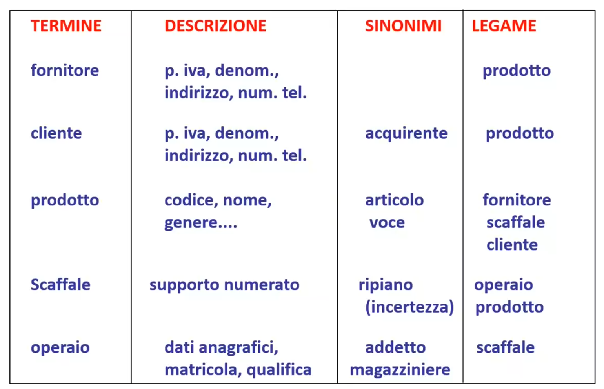Se prendiamo come esempio la prima riga, fornitore è legato al prodotto, infatti avevamo detto "I fornitori forniscono prodotti".
Dal glossario dei termini viene successivamente costruito lo schema scheletro seguendo il modello entità-relazione.
Si tratta di un modello grafico per passare dalla raccolta dei requisiti ad un modello più formale composto da:
A livello grafico verrà rappresentato con un rettangolo.
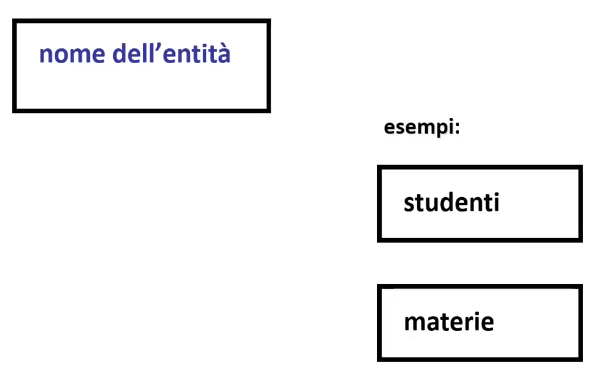A livello grafico rappresentiamo le associazioni con un rombo che collega due rettangoli (entità):
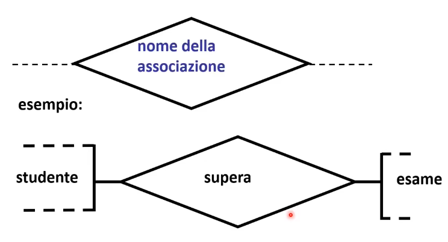Proprietà che possono essere:
Con la notazione (1,n) indichiamo che quella proprietà può essere inserita da un minimo di una volta ad un massimo di n volte. Se quindi la notazione è (1,2) significa che la stessa proprietà può avere un massimo di 2 valori. Con la notazione (0,n) indichiamo invece una proprietà opzionale.
Una proprietà (singola,multipla o composta) è derivata se è calcolata a partire da dati esterni. 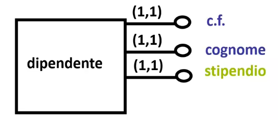
Ad esempio lo stipendio è calcolato come stipendio = salario_giornaliero * presenze.
Una proprietà (singola,multipla o composta) è chiave se identifica in modo univoco le istanze di entità.
Una o più proprietà possono essere associate o a relazioni o a proprietà.
Nello specifico, le proprietà chiave delle relazioni sono sempre composte in quanto vengono ereditate le proprietà chiave delle entità che collegaDi seguito un esempio di specifica delle proprietà di un'entità studente:
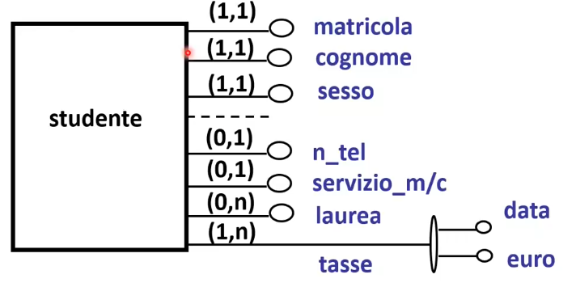In questo esempio:
Data una relazione definiamo cardinalità della relazione il numero di volte in cui una qualsiasi istanza di un’entità coinvolta in un’associazione partecipa all’associazione.
Un'entità può avere un'associazione anche con se stessa, in questo caso parliamo di autoassociazioni, ad esempio:
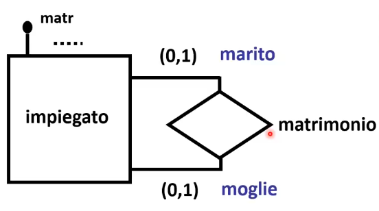Un dipendente può essere sposato con un altro dipendente.
Su ogni ramo dell'autoassociazione può anche essere riportato il ruolo del partecipante dell'associazione (marito,moglie). Nell'esempio specifico riportato si parla di autoassociazione 1:1.
Esistono anche autoassociazioni molti a molti (n:m) e autoassociazioni ricorsive(1:n).
Le autoassociazioni ricorsive vengono anche chiamate gerarchia (1:n)
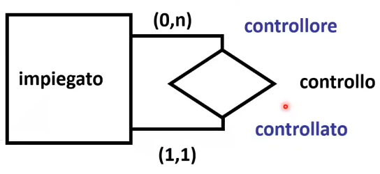In questo caso un impiegato è controllato da un altro impiegato e allo stesso tempo un impiegato può controllare da 0 a più impiegati.
In alcuni casi un'entità può anche essere identificata da altre ad essa collegata.
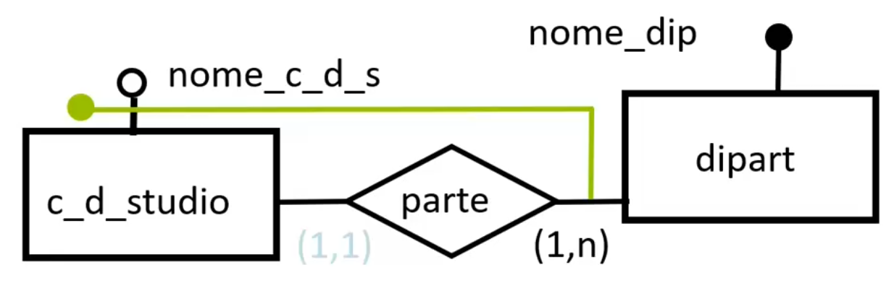In questo caso il corso di studio è identificato dal suo nome ma anche dal dipartimento che è un'entità esterna.
Le identificazioni esterne avvengono sempre tramite associazioni binarie in cui l'entità da identificare partecipa con cardinalità (1,1)
Infatti come è possibile vedere per ogni corso di studio abbiamo uno ed un solo dipartimento (1:1), non vale il viceversa.
Inoltre non è possibile identificare esternamente reciprocamente due entità, tornando all'esempio, non è possibile identificare un corso di studi con un dipartimento ed allo stesso tempo identificare un dipartimento con un corso di studi. Altrimenti creerei un ciclo.
Es. Disegnare lo schema scheletro dai seguenti requisiti
Es. Disegnare lo schema scheletro dai seguenti requisiti
A volte si sente la necessità durante la progettazione di basi di dati di avere entità simili tra loro e con una relazione logica di classe-sottoclasse.
Definiamo:
La gerarchia concettuale è il legame logico tra un'entità padre E ed alcune entità figlie E1,E2,...,En dove:
Inoltre:
Vediamo un esempio. Un'azienda si avvale dell'opera di professionisti esterni, quindi il suo personale si suddivide in esterni e dipendenti. Di fatto abbiamo due entità "dipendente" e "esterno" che "derivano" dalla classe "Personale".
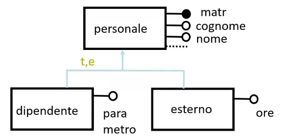Ognuna delle sottoclassi eredità le proprietà di "personale" (matr,cognome,nome) ma ne specifica altre per Ognuna come "ore" per "esterno".
Per dire che "dipendente" eredita da "personale", facciamo una freccia dalla sottoclasse verso la superclasse.
Nella gerarchia in verde sono inoltre presente due sigle:
Possiamo fare esempi più complessi, come il seguente:
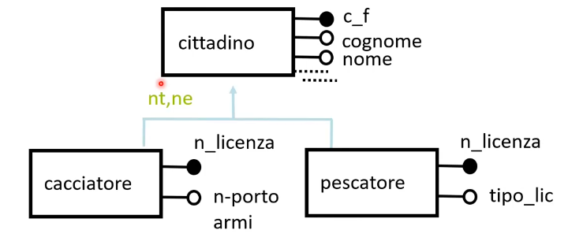Nello schema anagrafe ogni pescatore ed ogni cacciatore è un cittadino, ma non il viceversa. Possiamo per cui avere cittadini che non sono ne pescatori ne cacciatori. Ogni sottoclasse aggiunge alla classe certe proprietà utili a definirla come il n_licenza per il pescatore. Ogni pescatore per essere definito avrà n_licenza e c_f ereditato da Cittadino.
Nella gerarchia in verde sono inoltre presente due sigle:
Le gerarchie possono essere anche annidate.
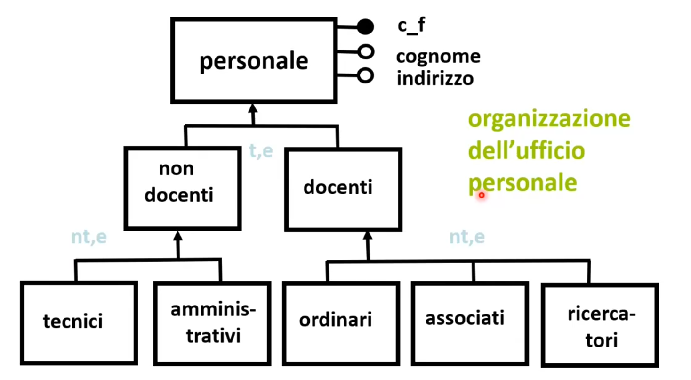Lo schema scheletro viene ampliato da altra documentazione business rules composta da:
Quindi alla fine della fase di progettazione concettuale avremo:
Le tre stategie principali per fare buona progettazione concettuale sono:
In ordine:
Il processo di raffinamento viene fatto seguendo delle regole dette primitive di trasformazione:
Questa strategia permette al progettista di iniziare i lavori immediatamente sullo schema scheletro trascurando i dettagli. Questa metodologia non va bene per applicazioni complesse in cui è difficile avere una visione di insieme.
Nella strategia Bottom-Up si descrivono piccoli schemi separati che via via si fondono per creare lo schema finale.
In ordine:
Per questo schema le primitive di trasformazione saranno:
A differenza di prima quindi abbiamo già attributi e proprietà, dobbiamo cercare un modo per aggregarli.
Si tratta di una strategia che si adatta bene ad una progettazione di gruppo, in cui diverse persone si occupano di sviluppare certe parti. Le parti verranno assemblate successivamente.
Come svantaggio abbiamo che si introduce complessità per l'integrazione tra parti.
Si tratta di un'alternativa interessante alle altre due per db di piccole-medie dimensioni.
In ordine:
Si tratta cioè di una metodologia mista tra le prime due dove si procede come per la top-down e solo se è necessario facciamo una decomposizione (passo 3) come per la bottom-up.